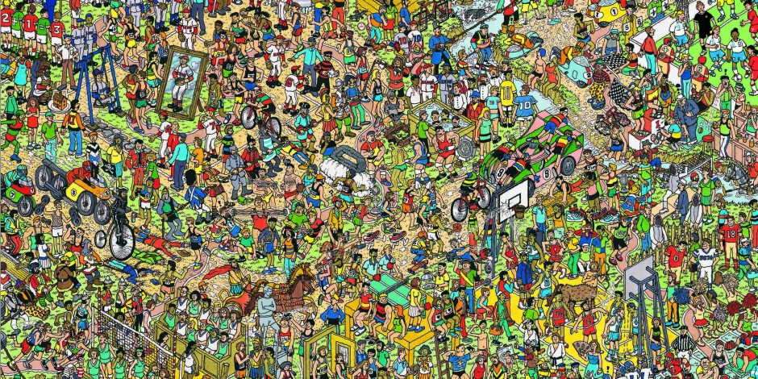

zk-SNARKs, or Zero-Knowledge Succict Non-interactive ARguments of Knowledge are a complicated, yet powerful form of mathematical proof. In practice, they are used as a form of trustless communication: prove to me that you know something without revealing the details of what you know.
There are a number of words in the acronym, and so let’s take a quick look at them each individually.
The classic example can be explained using the Where’s Wally franchise. (‘Where’s WaLdO’ in some dubious circles.)

Can you find him? (Clue: he looks like what you would get if you combined santa, a prison inmate, and a pedophile. Very distinctive.)
This original task of finding Wally is not particularly difficult for human beings. In fact, researchers have created an AI which can find Wally immediately.
While the original task is relatively simple, the question asked by zk-SNARKS is profoundly more complex - “can we prove that we know where Wally is without revealing his actual position?” Before reading further, have a think about how you might do this in practice (you won’t).
Metaphorically, this is how it is done. Set up a floor to ceiling wall between the prover (us) and the person to which we are proving our positional knowledge of Mr. Wally. Cut a tiny rectangle in the wall, just large enough to show the elusive character’s smug (yet uniquely distinguishable) facial features. Next, add a sheet of one way glass so that the verifier can see whatever the prover positions on one side of the cutout, but the prover cannot see the verifier in any way. Finally, position the map such that Wally’s face peeks through the hole, but nothing else about his surroundings is revealed. It is important to note that in this scenario, the viewer (the person we are proving our knowledge to) has absolutely no frame of reference which could be used to figure out where Wally is from our demonstration. In addition, there is no way for the prover and verifier to communicate with each other.
The simple (yet terrifying) POW (Proof Of Wally) as seen by the verifier.
This, at an extremely generalized, metaphorical level, is a zero-knowledge proof: or more specifically, a zk-SNARK. Applications abound, and while I am still figuring out the differences between the different species of the zk family, the core idea remains incredibly powerful.
Originally, zk-SNARKs were used for very niche proofs in computer science, however, they have since been expanded to encompass abstract arguments, and have in fact been shown to summarize ANY form of argument. For example, using ZK-snarks, we are able to prove that we have a checking account balance larger than $100,000 without revealing the balance itself. We would be able to prove that we have a disability, and qualify for grants, without revealing anything about the nature of that disability. It is important for you, reader, to understand the zk-SNARKs reveal absolutely nothing about the statement in question. Only that is is valid or not. These implementation of the use-cases mentioned are still relatively far out, as they deal with the incredibly sensitive details of human society. Much work will need to be done before ZK-snarks could fully remove the cost of trust.
However, this does not mean that fascinating near-term applications of zk-SNARKs do not abound. zk-SNARKS can also be used, excitingly as proofs of computation. Vitalik Buterin (our king) gave a simple example of a hash function in his article on the topic. For you noobs who don’t know what a hash function is, don’t worry; no one really knows the details of state of the art hash functions, else they would cease to be true hash functions. For the sake of space, a hash function is simply a mechanism which scrambles a piece of data beyond recognition, such that there is no way (in theory) to figure out how to find the original data from the scrambled version of it.
Eg: if we started with the phrase: “I love her lack of energy! Go girl give us nothing” and hashed it, we would probably get something to the effect of “n283otc4j17934tnc13o47bc1r38n4o”. If you saw that key-mash right there, there is very little chance that you would be able to figure out that it was derived from the phrase “I love her lack of energy! Go girl give us nothing”.
This is the essence of hashing. For you math-nerds, a hash function is a one-way function - something which actually has yet to be proven to exist. Hash and one-way functions are based on the myth of randomness, which probably does not exist in pure form either (yes, you guessed it, this basically means you have no free will).
Anyway, I’m getting sidetracked. As I said, a modern application of zk-SNARKs can be found in proof-of-computation. Say we take the quintessential “I love her lack of energy! Go girl give us nothing”, and hash it one quadrillion times - taking a hash of each previous hash. This is a huge amount of work, even for modern supercomputers. Our final output would be something like “n5c283hsminug2i7345tl2xjo35”, and this garbled string could be offered as a form of proof of computation by us to the verifier of the computation. However, this presents a problem: how does the verifier prove that the one quadrillion hashes have been performed without having to re-do the massive amount of computation themselves? How can they prove something with less effort than it took to calculate it?
For most mathematical problems, this problem of proof is easy. Say we have a function: x45 + 49x32 + x21 + 1 = 978751264We, the prover, claim to have a solution to it in the form x1 (if you really want to know, it’s x1 ≈ 1.57989). In order to support our claim, we could simply hand our solution to the verifier for testing. The verifier could plug this number x1 into the equation, and check that Right-Hand-Side equals Left-Hand-Side. Done! It would be vastly inefficient for the verifier to check the proof by finding the real root through attempting to re-calculate it / replicate the process of the prover.
At first glance, extending this simple math example to hash-functions or other, more abstract proofs such as the proof of disability mentioned earlier might seem tricky, or nigh-impossible. Fear not, however, for ZK-snarks save the day.
Spoiler Alert: I am in no way going to go into the specifics of how ZK-snarks function under the hood. The full details of the math is quite literally beyond me at this stage. What I will provide, however, is a 30,000 foot view of their functionality: what they do, not how they do it.
Abstracting naively from the sparse amount of reading and research I have done on the subject, ZK-snarks aim to encode problems as polynomials and provide a proof in the form of a solution (or root) of that polynomial. That is, given a large, complicated encoding of a problem y = f(x) (or to be more mathematically precise: y1, y2, y3... = f(x1,x2,x3...)), we provide a proof that we have solved that problem in the form of a solution (x1,x2,x3...).
Why does this work? Essentially, we are able to verify solutions to polynomial equations very quickly because polynomial functions are
Continuing with our wonderful Wally example, we might be able to encode the gnarly map containing Wally in a crowd as some function. The solution to this function would be two numbers y1, and y2 representing the coordinates of Wally. If we provided a vector (or matrix) X containing the values which, when plugged into the function, would yield the correct coordinates of Wally, we would have proven to the verifier that we know how to find Wally, at least for this example. It is key to note that we did not reveal our method(s) of searching for Wally. The verifier has no idea if we sent a search team for him, if we determined his position algorithmically, whether we implanted a tracker in his arm, NOTHING. In theory, there is no way for the verifier to replicate our methods and copy them. They simply know that we know something, without knowing the details of how we know it; The verifier knows that we are telling the truth without knowing the details of that truth.
In practice, this large function might be computed through machine learning, in the form of a neural network. Given enough data points in the form (wally_map, coordinates_of_wally), we could train a neural network to encode the relationship between the two. This way, the verifier would quickly be able check whether or not somebody is able to find Wally consistently.
To further cement the example, let us conduct a high-level thought experiment to figure out how a ZK-snark might be used to prove the disability of a prover without giving away the nature of this disability. The verifier could first train a neural network on data in the form (patient_information, disabilty_present). The patient information could be an arbitrarily large vector of data points on the patient, from age, to height, to blood type, etc.
This is a very basic form of a ZK-SNARK. For the skeptical verifier, this process of proof could be completed a number of times with different maps and different solutions until the verifier is convinced that the prover is telling the truth.
Like any metaphor, this one is not perfect. We would still be revealing a key piece of valuable information - the position of Wally. If we provide a solution to the encoded map-problem, the verifier could then use that solution to find Wally, and exploit him for labour. Obviously this is not ideal, and ways have been derived in which to prove we know the solution to a problem without even revealing the solution itself!
This gets very complicated, and might be detailed in another post. I’m bad at conclusions so yes, those are the basics of how ZK-snarks work from a VERY high level. They are powerful techniques which are only just beginning to be explored: in some sense, a zk-SNARK is to a cryptographic hash function what a 3D hologram is to a 2D picture. I encourage you to read more on them. SNARKS are an emerging field, and so please reach out to me at jstapleton17@apu.edu for any further questions (or, if you have corrections to what I said here).
{ /4 bass }